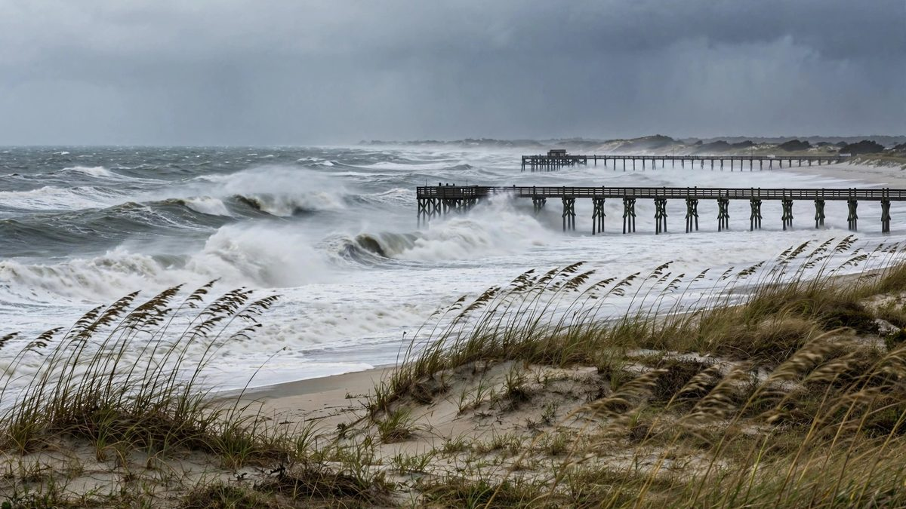

Un nor'easter se forma el domingo en la costa este y el NHC ve un 30% de probabilidad de desarrollo
La borrasca estacionada ya tiene nombre. La tormenta subtropical Josephine estaba el jueves por la mañana a unas 195 millas al sur-sureste de Nantucket, con vientos de 65 millas por hora, y los meteorólogos esperan que se convierta en un ciclón extratropical con fuerza de huracán mientras se aleja de la costa este.

Puntos clave
- El sistema que esta página sigue desde el domingo ya tiene nombre.
- A las 09:00 UTC del jueves, Josephine estaba a unas 195 millas al sur-sureste de Nantucket y se movía hacia el noreste a 13 millas por hora, todavía con vientos de 65 millas por hora y una presión…
- El nombre cambia poco sobre el terreno, que es lo que esta página señaló el domingo.
Actualizado 15:43 UTC, 22 de oct.: el sistema ya es la tormenta subtropical Josephine
El sistema que esta página sigue desde el domingo ya tiene nombre. El Centro Nacional de Huracanes comenzó a emitir avisos sobre la tormenta subtropical Josephine el miércoles, después de que la borrasca adquiriera rasgos subtropicales sobre la corriente del Golfo. El centro situó su formación a las 21:00 UTC del miércoles 21 de octubre, a unas 265 millas al sur de Nantucket, Massachusetts, con vientos máximos sostenidos de 65 millas por hora.
A las 09:00 UTC del jueves, Josephine estaba a unas 195 millas al sur-sureste de Nantucket y se movía hacia el noreste a 13 millas por hora, todavía con vientos de 65 millas por hora y una presión central mínima de 988 milibares. Los meteorólogos esperan que la tormenta pierda sus rasgos subtropicales a última hora del jueves o durante la noche, al interactuar con una vaguada en altura, y que salga de ese cambio reforzada, como un ciclón extratropical con fuerza de huracán en un plazo de 24 horas.
El nombre cambia poco sobre el terreno, que es lo que esta página señaló el domingo. The Weather Channel informa de rachas de hasta 40 millas por hora, inundaciones costeras de hasta 4 pies por encima de los niveles normales y corrientes de resaca peligrosas a lo largo de la costa este. Hay avisos de temporal para la costa de Massachusetts, donde la oficina del Servicio Meteorológico Nacional en Norton espera rachas con fuerza de tormenta el jueves y chubascos que llegarán a Cape Cod y las islas, según el Patriot Ledger. FOX Weather dice que la tormenta ya se aleja acelerando de la costa, con grandes olas que siguen golpeando el litoral aunque los vientos amainen fuera del sureste de Nueva Inglaterra. El jueves por la mañana no había vigilancias ni avisos costeros en vigor, y no se espera que el centro del sistema toque tierra en Estados Unidos.
Se espera que una borrasca con fuerza de tormenta se forme frente a la costa sureste más tarde el domingo y luego se quede allí, moviéndose despacio y de forma errática hasta mediados de semana. El Centro Nacional de Huracanes dice que el sistema podría adquirir rasgos subtropicales sobre las aguas cálidas de la corriente del Golfo. Lo haga o no, el centro es directo sobre lo que importa: vientos fuertes, inundaciones costeras y oleaje peligroso en partes de la costa este de Estados Unidos.
En su pronóstico de las 8 de la mañana, hora del Este, del domingo 18 de octubre, el NHC dijo que se espera que un área de baja presión no tropical, con fuerza de tormenta, se forme hoy más tarde o esta noche frente a la costa sureste de Estados Unidos. La probabilidad de formación en 48 horas es cercana a cero por ciento. La probabilidad en siete días es del 30 por ciento. Si el sistema gana un nombre, se llamaría Josephine, el siguiente en la lista atlántica de 2026.
Por qué la pregunta del nombre no es la verdadera pregunta
Un nor'easter no necesita nombre para inundar una carretera. La borrasca se está formando a lo largo de un frente frío que sale de la costa y luego se estanca, dijeron los meteorólogos de FOX Weather, y ese estancamiento es el problema. Una tormenta que se queda varios días empuja el agua hacia la costa durante varios ciclos de marea, y así es como las playas pierden arena y las carreteras bajas quedan bajo el agua en la marea alta.
El meteorólogo sénior de AccuWeather, Adam Douty, hizo la misma observación. Mientras la tormenta se queda cerca de la corriente del Golfo esta semana, dijo, puede adquirir poco a poco rasgos tropicales o subtropicales, pero se convierta o no en tormenta tropical o subtropical, los impactos esperados serían en la práctica los mismos.
Dónde golpea lo peor
Los pronósticos esperan oleaje fuerte y corrientes de resaca a lo largo de la costa este de Florida, con los impactos más importantes extendiéndose por las costas del Atlántico medio hasta Nueva Inglaterra, desde los Outer Banks de Carolina del Norte hasta Delaware, según AccuWeather. The Daily Caller, citando a FOX Weather, situó la zona objetivo desde los Outer Banks hasta la costa de Jersey a principios de la semana, con inundaciones costeras, vientos con rachas y lluvias persistentes.
El momento es incómodo para los Outer Banks. Las playas allí todavía gestionan una erosión importante de un nor'easter anterior, en septiembre, así que una segunda tormenta larga llega antes de que las dunas se hayan recuperado.
La temporada hasta ahora
La temporada de huracanes del Atlántico de 2026 ha producido nueve tormentas con nombre y un huracán hasta ahora. Isaias, que se formó en el Golfo, fue el único huracán, y tocó tierra cerca de Destin, Florida, con vientos de 105 millas por hora el 9 de octubre. Una Josephine con nombre sería la décima tormenta de la temporada.
Qué hacer con este pronóstico
El NHC pide a los residentes costeros que sigan los avisos de su oficina local del Servicio Meteorológico Nacional y del Centro de Predicción del Tiempo, junto con los pronósticos de alta mar y los avisos de tormenta. En la práctica, eso significa tres cosas esta semana. Vigile la marea, no solo la lluvia, porque las inundaciones de una tormenta estancada llegan con la marea alta. Manténgase fuera del oleaje, porque las corrientes de resaca de una tormenta a cientos de millas todavía matan bañistas en días de aspecto tranquilo. Y espere que el pronóstico cambie, porque un sistema que se mueve despacio y de forma errática es, en palabras de los propios meteorólogos, el más difícil de fijar.
Fuentes
El pronóstico del tiempo tropical del Centro Nacional de Huracanes, emitido a las 8 de la mañana, hora del Este, el 18 de octubre de 2026, trajo las probabilidades de formación y el aviso sobre vientos, inundaciones costeras y oleaje. The Naples News informó del aviso, del nombre Josephine y del recuento de la temporada. The Daily Caller, citando a FOX Weather, informó de la trayectoria del nor'easter, del frente estancado y de la erosión de septiembre.
Cronología
- Oct 9, 2026El huracán Isaias toca tierra cerca de Destin, Florida, con vientos de 105 millas por hora, el único huracán de la temporada atlántica de 2026 hasta ahora.
- Oct 18, 2026El pronóstico del NHC de las 8 de la mañana dice que se espera que un área de baja presión no tropical, con fuerza de tormenta, se forme frente a la costa sureste hoy más tarde o esta noche, con un 30 por ciento de probabilidad de formación en siete días.
- Oct 19, 2026Se espera que la borrasca se mueva despacio y de forma errática frente a la costa hasta mediados de semana, con vientos fuertes, inundaciones costeras y oleaje peligroso.
- Oct 21, 2026El NHC da nombre al sistema: la tormenta subtropical Josephine se forma a partir de una borrasca no tropical a unas 265 millas al sur de Nantucket, con vientos máximos sostenidos de 65 millas por hora.
- Oct 22, 2026Josephine está el jueves por la mañana a unas 195 millas al sur-sureste de Nantucket, se mueve hacia el noreste a 13 millas por hora, y los meteorólogos esperan que se convierta en un ciclón extratropical con fuerza de huracán en 24 horas mientras se aleja de la costa.
Fuentes
- National Hurricane Center Tropical Weather Outlook, 8 a.m. EDT Oct 18, 2026
- Naples News: Hurricane center in Florida tracking expected storm off US East Coast
- Daily Caller: Millions across East Coast threatened by developing nor'easter
- The Watchers: Subtropical Storm Josephine forms off U.S. East Coast, forecast to become a hurricane-force extratropical cyclone
- The Weather Channel: Nor'easter develops into Subtropical Storm Josephine
- FOX Weather: The last day for Subtropical Storm Josephine before it morphs into a non-tropical system
- Patriot Ledger: How Subtropical Storm Josephine could impact Mass: Strong winds, surf